How it works
How the AI Test Harness works
The AI Test Harness is a QA layer for Claude Code. It has nine specialist agents, shared project knowledge, a Playwright and TypeScript test suite, and the npm scripts around it. Eight agents learn the application, plan test cases, generate tests, review them, run them, heal failures, file defects and write the test report. A ninth adapts the harness itself. Each agent stops for your approval at set points and works on its story's own git branch, and permission rules in .claude/settings.json limit what any agent may do. Each part of the system has a diagram below.
The guide is for QA engineers and QA leads who run the agents, and for whoever maintains a project's copy of the harness. The agent definitions are described in agents/README.md, project knowledge in context/README.md, results, reports and closure in specs/execution/README.md, the defect log in specs/defects/README.md, and branches and commits in docs/GIT-WORKFLOW.md. The command reference is docs/AGENTS.md. All the diagrams come from one multi-page draw.io file, ai-qa-harness.drawio (see Updating the diagrams). The same guide is published as a browsable page, how-it-works.html, generated from this file.
1.Architecture: agents, knowledge and the test suite

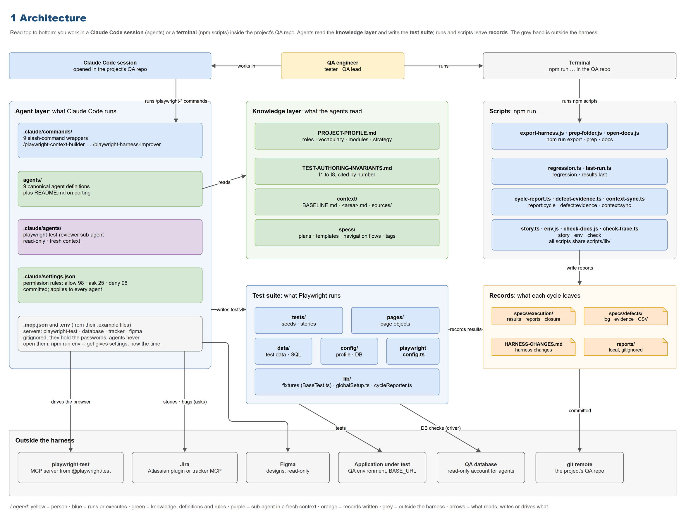
You work in a Claude Code session opened in the project's QA repo, or in a terminal in the same repo. The agents read the knowledge layer and write the test suite. Test runs and scripts leave records.
| Layer | Folder | Holds | Executes? |
|---|---|---|---|
| Agent | .claude/, agents/ | Slash commands, agent definitions, the sub-agent, permission rules | Yes. Claude Code runs the agents |
| Knowledge | PROJECT-PROFILE.md, TEST-AUTHORING-INVARIANTS.md, context/, specs/ | What the agents know about the application and the rules tests follow | No |
| Test suite | tests/, pages/, lib/, data/, config/, playwright.config.ts | The Playwright suite | Yes. Playwright runs it |
| Scripts | scripts/ | Export, prep, regression, reports, git, checks | Yes, through npm run … |
| Records | specs/execution/, specs/defects/, HARNESS-CHANGES.md | Results, reports, defects, closure reports, harness changes | No |
The agent layer:
| Path | Purpose |
|---|---|
| .claude/commands/ | Nine slash-command wrappers, each pointing at its definition |
| agents/ | The nine canonical agent definitions |
| .claude/agents/ | The playwright-test-reviewer sub-agent |
| .claude/settings.json | Permission rules: 98 allow, 25 ask and 96 deny |
| .mcp.json.example | MCP servers: playwright-test, database, tracker (Jira), figma; copied to .mcp.json, which is gitignored |
The knowledge layer:
| Path | Purpose |
|---|---|
| PROJECT-PROFILE.md | Roles, vocabulary, modules, severity rubric, test strategy, exit criteria |
| TEST-AUTHORING-INVARIANTS.md | Rules I1 to I8 that every test follows |
| context/ | BASELINE.md, one document per area, and sources/ for the project's documents |
| specs/ | Plans, plan templates, navigation flows per role, regression tags |
The test suite:
| Path | Purpose |
|---|---|
| tests/ | seeds/ (one login file per role), seed.spec.ts (signed out), stories/, example.spec.ts |
| pages/ | Page objects, including LoginPage.ts, DashboardPage.ts and common/Logout.ts |
| lib/ | BaseTest.ts fixtures, globalSetup.ts readiness check, cycleReporter.ts, api/ |
| data/ | testData.ts, auth_data.ts, sql_queries.ts, seed.ts |
| config/ | projectProfile.ts, testConfig.ts, DbConnection.ts and its adapters |
The scripts and records:
| Path | Purpose |
|---|---|
| scripts/ | regression.ts, last-run.ts, cycle-report.ts, defect-evidence.ts, context-sync.ts, story.ts, env.js, open-docs.js, check-docs.js, check-trace.ts, and the shared code in scripts/lib/; in the template only, export-harness.js and prep-folder.js |
| specs/execution/ | automated-results.csv, manual-results.csv, reports/ (formal reports), closure/ |
| specs/defects/ | log/ (one file per defect), evidence/, defects.csv |
| HARNESS-CHANGES.md | Changes a QA repo makes to its own harness |
The playwright-test MCP server is required by the context-builder, generator and healer. The database server, with a read-only QA account, is optional. Without it, agents ask you for queries and the healer reports database-backed failures instead of judging them. Jira is optional, through the Atlassian plugin or the tracker MCP entry. Without it, you paste stories into the planner, the defect-raiser writes specs/defects/defects.csv for import, and you tell the healer which defects were fixed. Figma is optional and read-only, through the figma entry or the Figma plugin. Without it, you paste designs as screenshots. See docs/MCP.md.
2.Agent pattern: command, definition and sub-agent

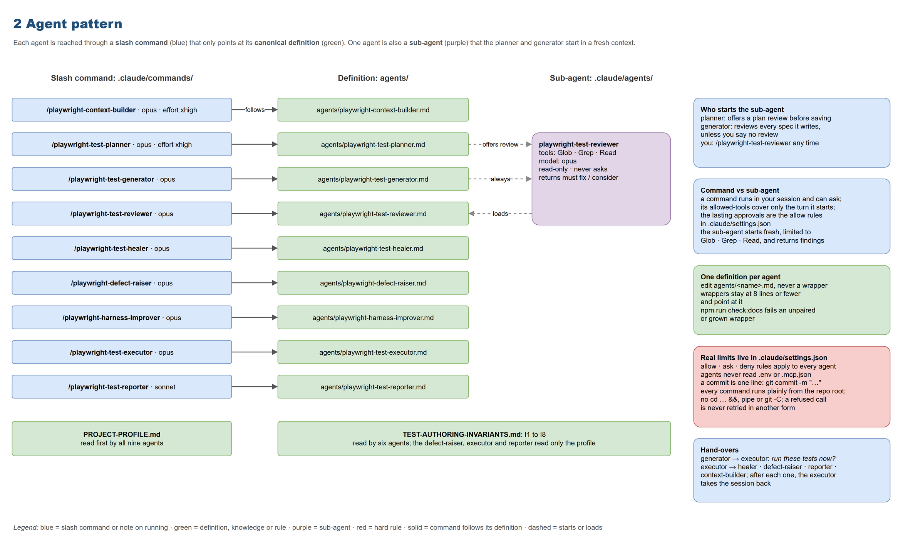
An agent is reached in one of three ways:
- A slash command,
.claude/commands/<name>.md, holds Claude Code frontmatter (description,allowed-tools,model, andeffortfor two agents) and one instruction: readagents/<name>.mdand follow it. Itsallowed-toolscover only the turn the command starts. The approvals that last through a session are the allow rules in.claude/settings.json. - The canonical definition,
agents/<name>.md, holds all of the agent's instructions in plain Markdown. - The sub-agent
.claude/agents/playwright-test-reviewer.mdlets the planner and the generator start the reviewer in a fresh context. It also points atagents/playwright-test-reviewer.md.
Wrappers defer to the definition. To change how the healer treats a failing assertion, you edit agents/playwright-test-healer.md and leave .claude/commands/playwright-test-healer.md as it is. npm run check:docs fails if a wrapper or sub-agent file has no matching definition, does not point at it, or grows beyond 8 lines of content.
Settings worth knowing:
- Every command and the sub-agent use
opus, except the reporter, which usessonnetbecause its numbers come from the script. The context-builder and planner also seteffort: xhigh. - The reviewer sub-agent has
tools: Glob, Grep, Read. It never edits and never asks. - The planner offers a plan review before saving, the generator reviews every spec it writes unless you say no review, and you can run
/playwright-test-reviewerdirectly. - All nine agents read
PROJECT-PROFILE.mdfirst. Six also readTEST-AUTHORING-INVARIANTS.md; the defect-raiser, executor and reporter do not. - Hand-overs go through files. The generator offers the executor, and the executor hands over to the healer, defect-raiser, reporter and context-builder. Each hands back when it finishes, and each reads its input from disk, so a session that ends part-way resumes with the same command.
- Every agent runs each command plainly from the repo root, with no
cd … &&in front, no pipe after and nogit -C, because the permission rules match a command by how it starts. It commits in the one-linegit commit -mform only. A refused call is reported once and never retried in another form.
3.End-to-end testing lifecycle

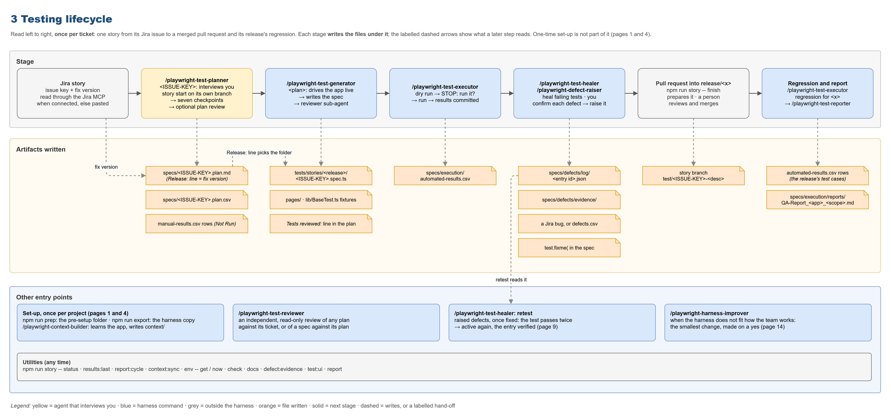
The lifecycle runs once per ticket, starting from the Jira story. Setting up a project's QA repo happens once, before any ticket, and is in section 4.
Jira story (key + fix version) → read through the Jira MCP server when it is connected
/playwright-test-planner <ISSUE-KEY> → test/<ISSUE-KEY>-<desc> branch · specs/<ISSUE-KEY>.plan.md · .plan.csv · manual-results.csv rows
/playwright-test-generator <plan> → tests/stories/<release>/<ISSUE-KEY>.spec.ts · pages/ · lib/BaseTest.ts · **Tests reviewed:** in the plan
/playwright-test-executor <ISSUE-KEY> → specs/execution/automated-results.csv
/playwright-test-healer → fixed tests · specs/defects/log/<entry id>.json · evidence/
/playwright-defect-raiser → a Jira bug or a specs/defects/defects.csv row · test.fixme(
… pull request: npm run story -- finish prepares it, into release/<release>;
a person reviews and merges …
/playwright-test-executor (regression) → automated-results.csv for the release
/playwright-test-reporter → specs/execution/reports/QA-Report_<app>_<scope>.md · .html · .pdfHow the stages connect:
- People make the decisions. The planner interviews you through seven checkpoints. The generator stops for new page objects, SQL and the file path. The executor runs nothing without your yes. The healer asks before it records a defect, and the defect-raiser asks once before filing. People review and merge the pull request and decide whether a cycle closes.
- Every story needs its Jira issue key, and test case IDs start with it. The plan's
**Release:**comes from the story's fix version, names the spec's folder undertests/stories/and therelease/<x>branch the story merges into. - Each stage reads its input from files, so a plan approved one day generates fine the next.
- Every run is recorded.
lib/cycleReporter.tswrites each test case's latest result as the run ends (see section 10), and each agent commits its own stage.
There are other ways in. /playwright-test-healer retests raised defects once they are fixed. /playwright-test-reviewer reviews any plan or spec. /playwright-harness-improver changes the harness when it does not fit. The npm run utilities (story -- status, results:last, report:cycle, context:sync, env, check, docs) work at any time.
4.Set-up and the context-builder

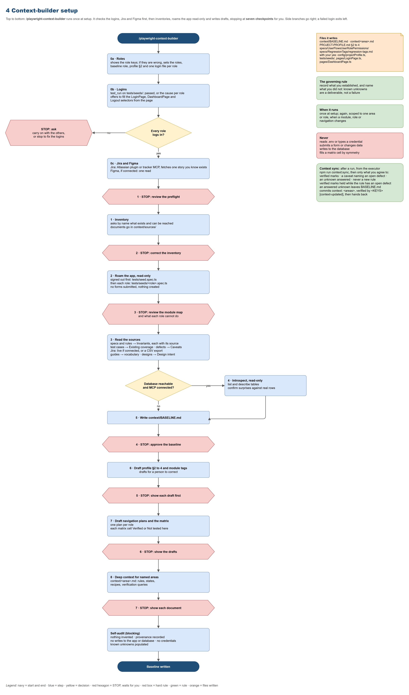
A project's QA repo is set up once. From the template, npm run prep -- <dir> --name "<project>" makes the folder a QA lead fills in before set-up day, and npm run export -- <dir> copies the harness files into the new repo without overwriting anything. npm run export -- <dir> --example <name> builds a practice repo instead. docs/NEW-QA-REPO.md has the full set-up.
Then /playwright-context-builder establishes what the harness knows about the application. It runs again only when the application changes.
| Step | What happens |
|---|---|
| 0 · Preflight | Confirms or sets up the roles, runs every login file, offers to fill the login, signed-in and sign-out selectors, fetches one Jira story and makes one Figma read to prove the connections |
| 1 · Inventory | Asks by name which sources exist and can be reached |
| 2 · Roam | Signed out first (tests/seed.spec.ts), then each role (tests/seeds/<role>.spec.ts), read-only |
| 3 · Read | Specs and rules become Invariants with sources; test cases become Existing coverage; defects become Caveats; Jira live or from a CSV export; designs become Design intent |
| 4 · Introspect | Only with a reachable database and the MCP server; read-only |
| 5 to 8 · Write | context/BASELINE.md, profile §2 to 4 and module tags, navigation plans and the cross-role matrix, deep context per named area |
It stops for you to review the preflight, correct the inventory, review the module map, approve the baseline, and see each profile draft, the navigation drafts and each context document. A failed login stops it to ask whether to carry on with the other roles. It never handles a password: it starts from each role's login file, which logs in inside the test runner, and agents cannot read .env. Name an area, module or role to re-run it for that part only.
After a run, the executor hands it the suggestions you agreed to from npm run context:sync. That is a context sync: a verified: <TCID>, <date> mark on a rule, a caveat naming an open defect, or a known unknown answered. A rule with an open defect takes no new verified: marks; its passing cases are held until the defect is fixed. An answered unknown leaves BASELINE.md and points to the area's caveat. A test result never becomes, changes or removes a rule. The context-builder commits context: … [context-updated] and hands back.
5.Test planning

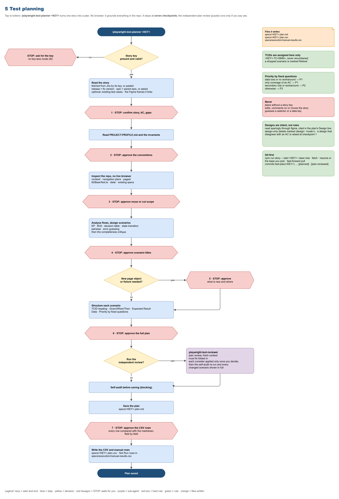
/playwright-test-planner <ISSUE-KEY> turns one story into specs/<ISSUE-KEY>.plan.md and its CSV.
It runs the story start protocol before anything else: npm run story -- start, with the base branch you pick, or it resumes the story's existing branch (see section 12). Without a Jira issue key it stops and asks; there is no key-less mode (I8). It uses no browser and grounds the plan in the repo: context/, the navigation plans, pages/, data/ and existing specs.
If Figma is connected, it reads the frames the story links, sparingly, as design intent. A design is never a requirement. Each frame is cited in the plan's **Design:** line, a detail taken only from a design is marked (design: <node>), and a design that disagrees with an acceptance criterion is raised at the first checkpoint.
Its seven checkpoints are the story and its gaps, conventions, reuse and scope, scenario titles, anything new, the full plan, and the CSV rows, which it compares with the Markdown field by field. Before saving, it offers playwright-test-reviewer in plan-review mode and folds the must fix findings in. It applies a consider finding only once you decide, then re-runs its self-audit and shows you the changed scenarios in full. A clean review is recorded as **Plan reviewed:** in the plan.
The planner owns the test case IDs: <ISSUE-KEY>-TC<NNN>, never renumbered, with a dropped scenario marked Retired. Each manual scenario gets a Not Run row in specs/execution/manual-results.csv.
6.Test generation

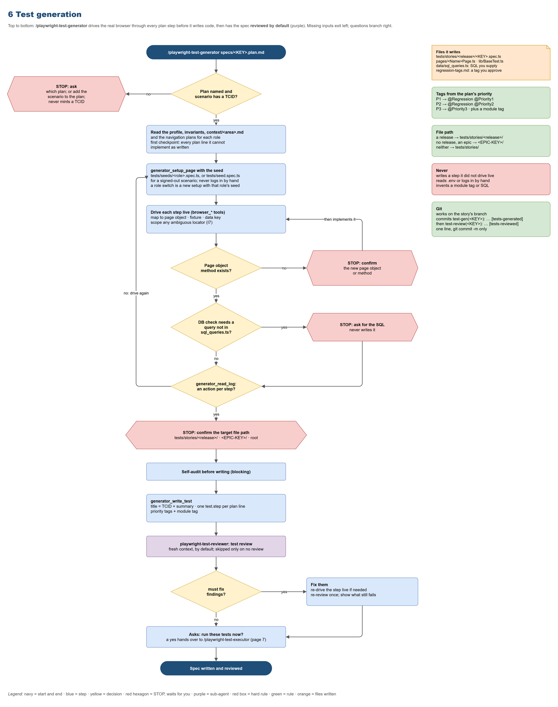
/playwright-test-generator <plan> turns an approved plan into a spec.
It drives first. generator_setup_page starts from the role's login file, every step runs live through the browser tools, and generator_read_log must show an action for each step before anything is written. A test that switches role starts a new session from that role's login file. It lists any plan line it cannot implement as written at its first checkpoint.
It stops for a missing plan or test case ID, a new page object or method, SQL it does not have, and the target file path: tests/stories/<release>/<ISSUE-KEY>.spec.ts, or with no release yet the epic's folder or tests/stories/.
After writing, it starts playwright-test-reviewer in test-review mode, fixes every must fix (re-driving the step if needed) and re-reviews once. A clean review is recorded as **Tests reviewed:** in the plan, and a story merges only once it is set. It commits test-gen(<KEY>): … [tests-generated] and test-review(<KEY>): … [tests-reviewed].
Tags follow priority. P1 and P2 get @Regression and @Priority1 or @Priority2, P3 gets @Priority3, and each test also gets a module tag from specs/RegressionTags/regression-tags.md. It ends by asking "run these tests now?", and a yes hands over to the executor.
7.Running tests

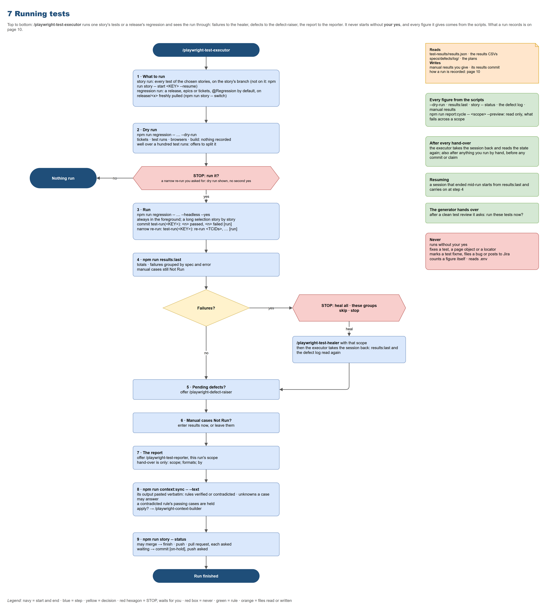
/playwright-test-executor runs the tests and sees the run through. A story run covers every test of the chosen stories. A regression run covers a release, or chosen epics or tickets, with @Regression tests by default. It works on the story's branch, or switches to the release branch with npm run story -- switch.
It shows the selection from npm run regression -- … --dry-run: the tickets, test count, browsers and build, without recording anything. It runs only on your yes, as npm run regression -- … --headless --yes, always in the foreground with the longest command timeout, because a run in the background ends with a non-interactive session. A selection that could outlast that timeout runs story by story, and a selection well over a hundred test runs is offered as a split. For a narrow re-run you asked for by name, it shows the dry run and does not ask again. The results are committed with the counts from npm run results:last, as test-run(<KEY>): <n> passed, <n> failed [run], or for a narrow re-run test-run(<KEY>): re-run <TCIDs>, <n> passed, <n> failed [run].
npm run results:last groups failures by spec and error. You choose heal all, these groups, skip or stop, and it hands over to the healer with that scope. Then it offers, in turn, the defect-raiser for pending defects, the manual cases still Not Run, the reporter (handed only scope; formats; by), and npm run context:sync, whose output it pastes verbatim for the context-builder. For a story, npm run story -- status decides the end: a story that may merge is offered finish, push and a pull request, each asked; a story that is waiting gets an [on-hold] commit.
After every hand-over it takes the session back and reads the state again, and also after anything you run by hand. Every figure it gives comes from the dry run, results:last, npm run report:cycle -- <scope> --preview, the defect log or the manual results; it never counts for itself. It never runs without your yes, fixes a test, marks one fixme, files a bug, posts to Jira or reads .env.
8.Healing failures

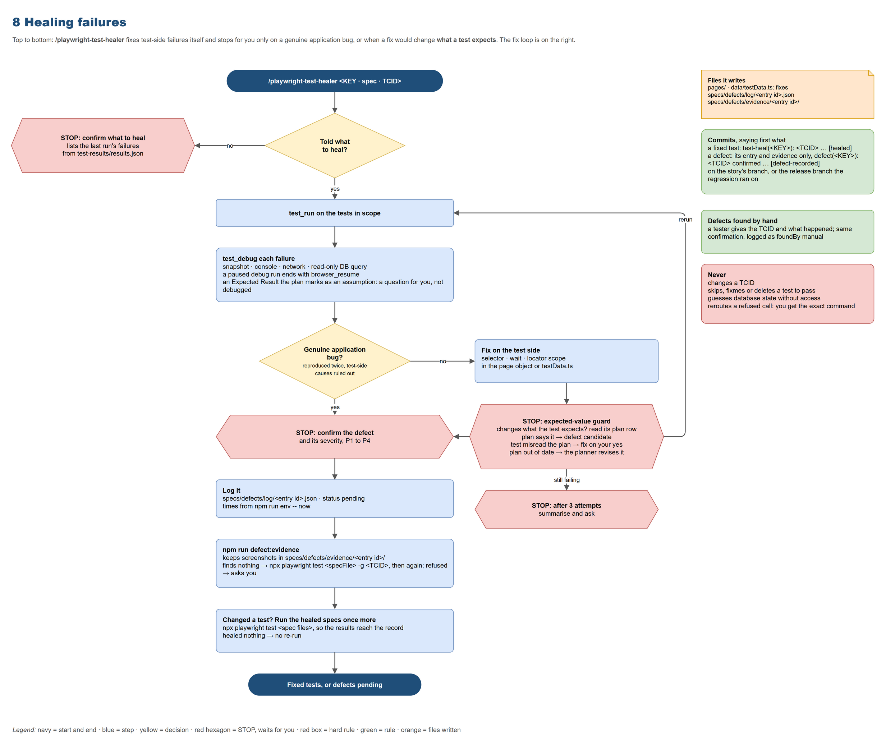
/playwright-test-healer fixes failing tests and confirms genuine defects with you.
Name what to heal: an issue key, a spec, a test case ID, or "what failed in the last run". If you name nothing, it lists the last run's failures from test-results/results.json and asks. The executor passes the groups you chose. When the plan marks a failing case's Expected Result as the team's assumption, the healer asks you about it and does not debug it. When it is done with a paused debug run, it ends it with browser_resume.
It fixes test-side problems on its own: selectors, waits and locator scope, in the page object or testData.ts, up to three attempts per test. It stops for what to heal, after three attempts, and to confirm a defect and its severity. A fix that changes what a test expects goes through the expected-value guard. If the plan's Expected Result says what the test was checking, the application changed and it is a defect candidate. If the test misread the plan, it fixes the test on your yes. If the plan itself is out of date, it says so and the planner revises the plan first.
After you confirm a defect, it writes the entry as its own file, specs/defects/log/<entry id>.json, as pending, and runs npm run defect:evidence, which copies the screenshots into specs/defects/evidence/. If no failed result is left to copy, it re-runs that one test with npx playwright test <specFile> -g <TCID> first. Every time it records comes from npm run env -- now.
It re-runs the healed specs once more only if it changed a test. It commits test-heal(<KEY>): … [healed], and a defect as its entry and evidence only, as defect(<KEY>): … [defect-recorded]. A refused call is never rerouted through another runner or command: it tells you the exact command to run.
9.Defects and retest

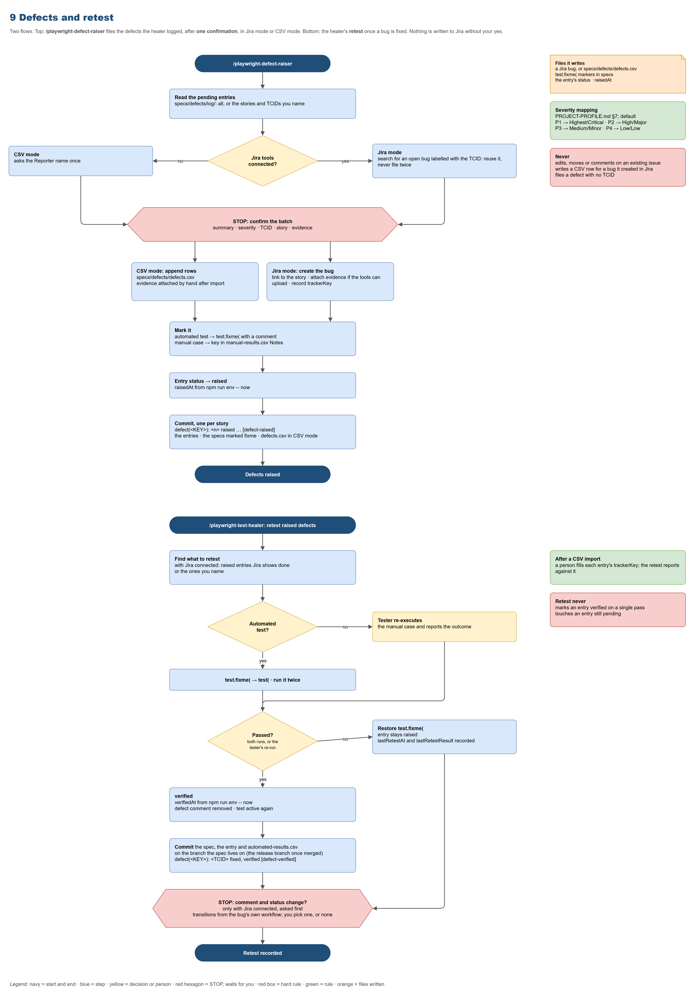
/playwright-defect-raiser files the defects the healer logged. It shows the batch (summary, severity, test case ID, story, evidence and the files it will commit) and files only what you agree to.
With Jira connected, it searches for an open bug labelled with the test case ID, then creates the bug, links it to the story and attaches the evidence if the tools can upload. Without Jira, it appends rows to specs/defects/defects.csv for import, asking once for the Reporter name, which a Jira import needs. An automated test becomes test.fixme( with a defect comment, and a manual case gets the key in manual-results.csv. The entry moves to raised with a raisedAt time from npm run env -- now, committed as defect(<KEY>): <n> raised … [defect-raised].
The retest is the healer again. It finds raised entries that Jira shows as done, or the ones you name, turns test.fixme( back into test( and runs it twice. Passed both times, the entry becomes verified with a verifiedAt time; otherwise the fixme is restored and the entry records lastRetestAt and lastRetestResult. It commits the spec, the entry and automated-results.csv on the branch the spec lives on, which is the release branch once the story is merged, as defect(<KEY>): <TCID> fixed, verified [defect-verified]. A manual case is re-executed by the tester. Before writing to Jira it stops, and you choose a comment and a transition from the bug's own workflow, or neither.
10.Results record and cycle report

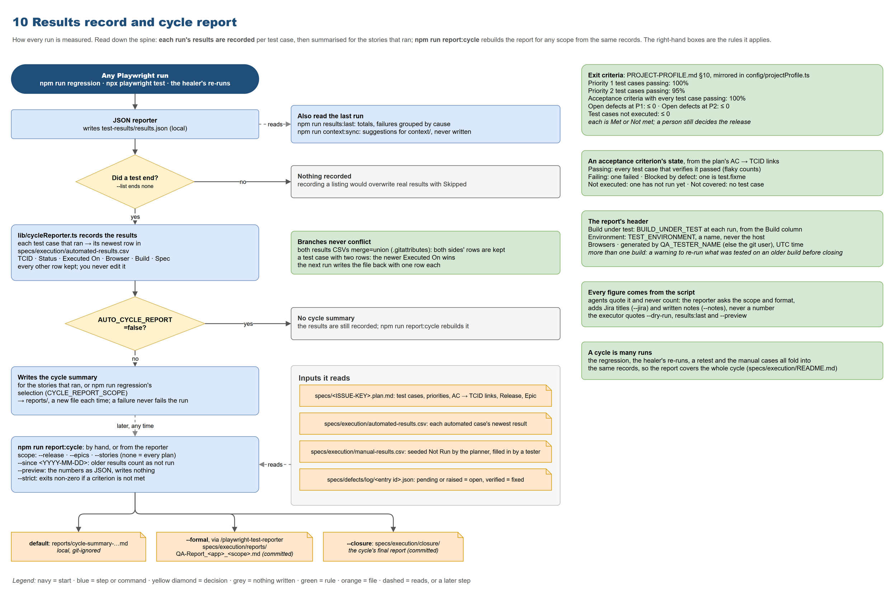
Every Playwright run is measured the same way, whether it comes from npm run regression, the healer or npx playwright test in a terminal. The JSON reporter writes test-results/results.json, then lib/cycleReporter.ts records each test case's latest result in specs/execution/automated-results.csv, with its status, time, browsers, build and spec. A run in which no test ended, such as npx playwright test --list, records nothing.
The record is committed. It merges with merge=union, and the scripts read the newest row per test case, so two story branches never conflict over it. Manual results live in specs/execution/manual-results.csv.
After recording, the cycle reporter writes a cycle summary for the stories that ran, to reports/ (local, not committed). AUTO_CYCLE_REPORT=false in .env turns that off. npm run report:cycle builds the same report by hand, for --release, --stories or --epics, and --since <date> takes the latest result of every case since the cycle began. --preview prints the figures as JSON and writes nothing.
The report reads the plans, both results records and the defect log, and measures them against the exit criteria in PROJECT-PROFILE.md §10 (mirrored in config/projectProfile.ts). By default those are Priority 1 cases 100% passing, Priority 2 cases 95%, acceptance criteria with every test case passing 100%, no open P1 or P2 defects, and no test case left not executed. An acceptance criterion passes only when every test case that verifies it passes; one failing or defect-blocked case fails it. The header names the build from BUILD_UNDER_TEST and the environment from TEST_ENVIRONMENT, never the host in BASE_URL, and warns when the results come from more than one build.
Every figure in a report, an executor's message or a commit comes from these scripts. Agents quote them and never count.
11.Regression, reports and closure

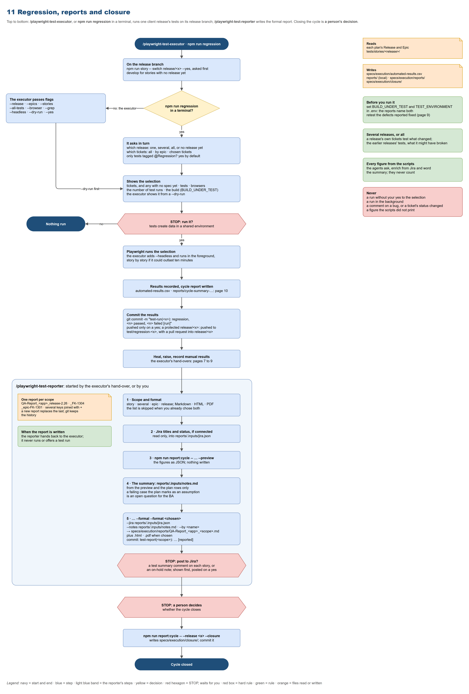
A release's regression runs on your machine, through /playwright-test-executor (say regression for 2.26) or npm run regression in a terminal. The formal report is /playwright-test-reporter's.
Before you run it, set BUILD_UNDER_TEST and TEST_ENVIRONMENT in .env, and retest defects reported fixed. The regression runs on release/<release>; the executor switches to it with npm run story -- switch.
In a terminal, npm run regression asks which release (a number, several, all, or no release yet), which tickets (all, by epic, or chosen), and whether to run only @Regression tests. The executor passes the answers as flags: --release, --epics, --stories, --all-tests, --browser, --grep, --headless, --dry-run, --yes. It runs every browser project in playwright.config.ts unless you pass --browser, and nothing runs before your yes. The results commit is test-run(<release>): regression, …; if the remote protects release branches, it goes to test/regression-<x> and a pull request into release/<x>.
The reporter asks the scope (a story, several, an epic or a release) and the format (Markdown, HTML or PDF), unless you already chose both. It adds Jira titles and status when connected, previews the figures with --preview, and writes two to five sentences of notes from them and the plan rows. A failing case the plan marks as the team's assumption is reported as an open question for the BA. It writes specs/execution/reports/QA-Report_<app>_<scope> with npm run report:cycle -- --formal, commits it as test-report(<scope>): … [reported], and offers a test-summary comment on each Jira story, asked first. There is one report per scope: a new one replaces the last, and git keeps the history.
At the end, a person decides whether the cycle closes. npm run report:cycle -- --closure writes the final report to specs/execution/closure/.
12.Git workflow

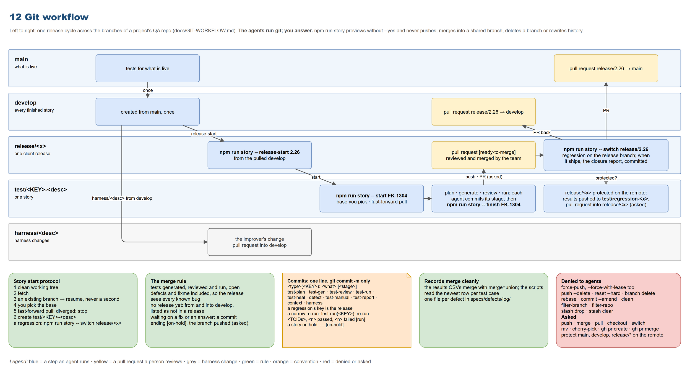
Every story's work happens on its own branch. The agents run git and you answer. The full workflow is in docs/GIT-WORKFLOW.md.
| Branch | Holds | Created from | Merges into |
|---|---|---|---|
main | The tests for what is live | (none) | (none) |
develop | Every finished story's tests | main, once | (none) |
release/<x> | One client release's stories; its regression runs here | the latest develop | main, and back into develop, when the release closes |
test/<KEY>-<desc> | One story | the freshly pulled release/<x>; develop with no release yet | its base, by pull request |
harness/<desc> | A harness change, the improver's | develop | develop |
npm run story has five commands. status works out each story's stage and whether it may merge from the files, every time. start runs the story start protocol: a clean tree, a fetch, resuming an existing branch, the base you pick and a fast-forward pull. switch moves to a branch, release-start creates release/<x> from the freshly pulled develop, and finish checks the merge rule and brings the latest base into the story's branch. Without --yes each only shows what it would do, and none pushes, merges into a shared branch, deletes a branch or rewrites history.
A story merges once its tests are generated, reviewed and run. Open defects and test.fixme are included, so the release sees every known bug. A story that is waiting gets an [on-hold] commit instead.
Commits are one line, written as git commit -m "<type>(<KEY>): <what> [<stage>]", with no body and no trailer. The types are test-plan, test-gen, test-review, test-run, test-heal, defect, test-manual, test-report, context and harness. The results CSVs merge with merge=union and each defect is its own file, so records merge cleanly. Protect main, develop and release/* on the remote: the permission rules stop the usual destructive commands, and branch protection holds whatever is typed.
13.Guardrails

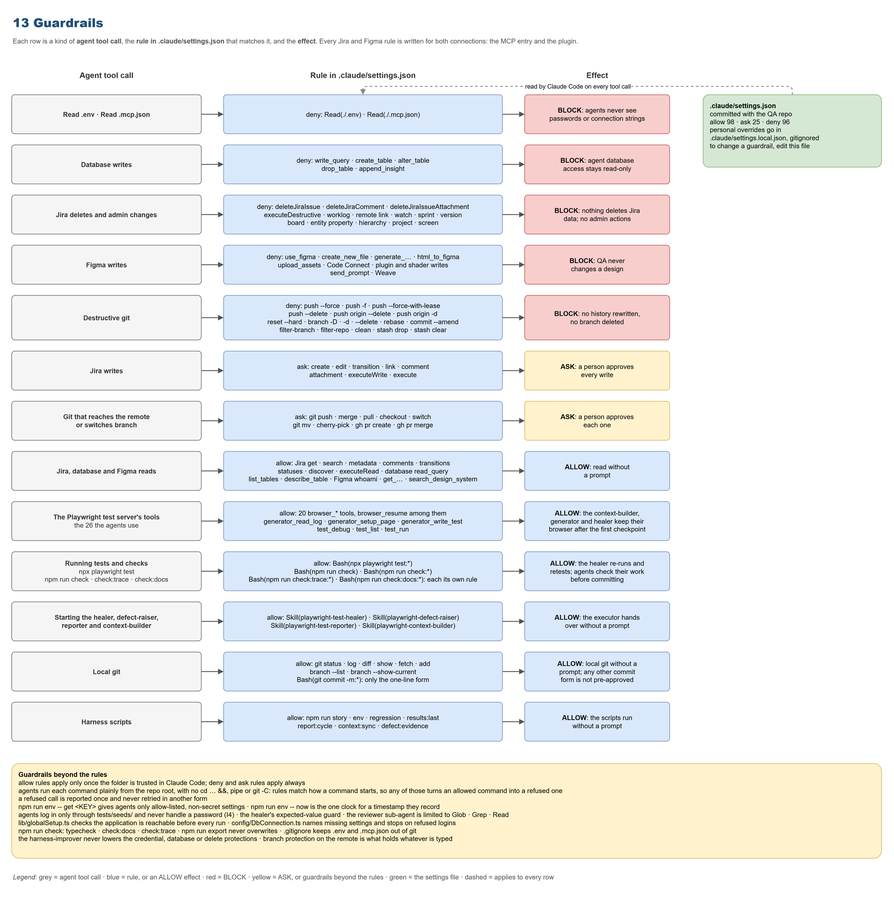
The harness has no hook scripts. Its guardrails are permission rules in .claude/settings.json, which Claude Code applies to every agent tool call: 98 allow, 25 ask and 96 deny rules. Every Jira and Figma rule is written for both connections: Jira's mcp__tracker__ and mcp__plugin_atlassian_atlassian__, and Figma's mcp__figma__ and mcp__plugin_figma_figma__.
| Rule | Behaviour |
|---|---|
Read(./.env), Read(./.mcp.json) | Blocks: agents never see passwords or connection strings |
| Database write tools | Blocks write_query, create_table, alter_table, drop_table, append_insight |
| Jira deletes | Blocks issue, comment and attachment deletes, and executeDestructive |
| Jira admin and project tools | Blocks worklog, remote link, watch, sprint, version, board, entity property, hierarchy, project and screen changes |
| Destructive git | Blocks force-push, push --delete, reset --hard, branch delete, rebase, commit --amend, filter-branch, filter-repo, clean, stash drop and stash clear |
| Figma writes | Blocks every tool that writes to Figma: use_figma, create_new_file, the generate_… tools, uploads, Code Connect, plugin and shader writes, send_prompt, Weave runs |
| Jira writes | Asks before create, edit, transition, link, comment, attachment, executeWrite, execute |
| Git that reaches the remote or switches branch | Asks before push, merge, pull, checkout, switch, mv, cherry-pick, gh pr create, gh pr merge |
| Jira, database and Figma reads | Allowed without a prompt |
| The Playwright test server's tools the agents use | Allowed, so the context-builder, generator and healer keep their browser after the first checkpoint. These are the same tools their commands already grant, and browser_resume, which ends a paused debug run |
Running one test: npx playwright test | Allowed, so the healer can re-run a test for its evidence and run a retest after the executor hands over |
| Starting the healer, defect-raiser, reporter and context-builder | Allowed, so the executor can hand a run over to each without a prompt |
| Local git and the harness scripts | Allowed: git status, log, diff, show, fetch, add and commit -m; npm run story, env, check (and check:trace, check:docs, each its own rule), regression, results:last, report:cycle, context:sync, defect:evidence |
The allow rules apply only after you accept Claude Code's trust dialog for the folder; deny and ask rules apply always. To change a guardrail, edit .claude/settings.json. Personal overrides go in .claude/settings.local.json, which is gitignored. Rules match a Bash command by how it starts, so agents run each command plainly from the repo root, and git push origin x --force would not match git push --force:*. Branch protection on the remote is the real guard for git.
Safeguards beyond the rules:
- Agents log in only through
tests/seeds/and never handle a password (I4). npm run env -- get <KEY>gives agents only allow-listed, non-secret settings; passwords, emails, tokens and database settings are always refused.npm run env -- nowis the one clock agents use for a time they record.- A refused call is reported once and never retried in another form.
- The healer's expected-value guard, and the reviewer sub-agent limited to
Glob,GrepandRead. lib/globalSetup.tschecks the application is reachable before every run.config/DbConnection.tsnames missing settings before connecting and stops on refused logins.npm run checkruns the typecheck,check:docs(including every setting the code reads being in.env.example) andcheck:trace.npm run exportnever overwrites, and.gitignorekeeps.envand.mcp.jsonout of git.- The harness-improver never lowers the credential, database or delete protections.
14.Harness improvement

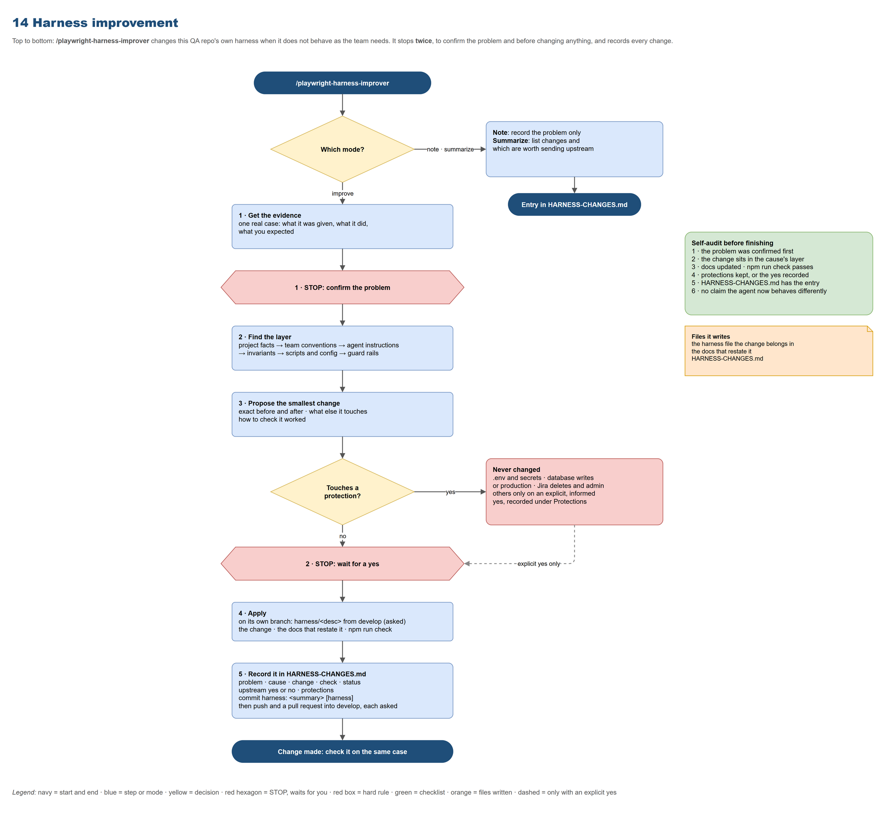
/playwright-harness-improver changes a QA repo's own harness when it does not behave as the team needs. It works on a harness/<desc> branch from develop.
- It gets the evidence: one real case, with what the agent was given, what it did and what you expected.
- STOP: you confirm the problem statement.
- It finds the layer, most specific first: project facts, team conventions, agent instructions, invariants, scripts and config, guard rails. A wrong fact is fixed as a fact.
- It proposes the smallest change, with the exact before and after, what else it touches and how to check it.
- It checks the protections. Credential, database and Jira-delete protections never change; the others change only on an explicit yes, recorded.
- STOP: it waits for your yes.
- It applies the change, updates the docs that restate it, and runs
npm run check. - It records an entry in HARNESS-CHANGES.md: problem, cause, change, check, status, upstream and protections. It commits
harness: … [harness]and offers to push and open a pull request intodevelop, each asked.
Its self-audit has 6 items, from "the problem was confirmed first" to "no claim the agent now behaves differently". It has two other modes: Note records a problem without changing anything, and Summarize lists the repo's changes and which are worth sending to the template.
15.Concepts that apply everywhere
- Every story needs its Jira issue key. Each test case is
<ISSUE-KEY>-TC<NNN>, starts its test's title, and links the acceptance criterion to the result, the defect and the Jira bug.npm run check:traceenforces it (I8). - TEST-AUTHORING-INVARIANTS.md holds I1 to I8: page objects, fixtures, test data, credentials, assertion values, environment config, locator uniqueness and traceability.
- Each role key appears in
config/projectProfile.ts, profile §2,.envas<ROLE>_EMAILand<ROLE>_PASSWORD, and one login file intests/seeds/. - A plan's
**Release:**is the client's release, from the Jira fix version, and names itsrelease/<x>branch. The harness's own version lives only in the template'sCHANGELOG.md; each QA repo records the version it was copied from in profile §1. - Story status is worked out each time.
npm run story -- statusreads the plan, its review lines, the spec, the results and the defect log every time. - Numbers come from scripts. The executor and the reporter quote what
results:lastandreport:cycleprint, and no agent counts. Times come fromnpm run env -- now. - Records are committed. Results, manual results, the defect log, evidence, formal reports and closure reports live in the QA repo, so the whole team works from one record.
- A Figma frame guides a plan's wording and states as design intent. The acceptance criteria and
context/decide. - Every agent runs on
opus, except the reporter onsonnet; the context-builder and planner useeffort: xhigh. - The template names no application. A project's copy holds its own names in the profile,
context/anddata/.
16.Which command do I use?
| I want to… | Run |
|---|---|
| Prepare the folder for a new QA repo (from the template) | npm run prep -- <dir> --name "<project>" |
| Copy the harness into a QA repo (from the template) | npm run export -- <dir> |
| Build a practice repo (from the template) | npm run export -- <dir> --example <name> |
| Teach the harness the application | /playwright-context-builder |
| See where each story is, and whether it may merge | npm run story -- status |
| Start or resume work on a story | npm run story -- start <ISSUE-KEY> (the planner runs it for you) |
| Switch to a release branch, start one, or finish a story | npm run story -- switch, release-start, finish |
| Plan test cases for a story | /playwright-test-planner <ISSUE-KEY> |
| Generate tests from a plan | /playwright-test-generator <plan> |
| Review a plan or spec independently | /playwright-test-reviewer |
| Run a story's tests, or a release's regression | /playwright-test-executor |
| Fix failing tests | /playwright-test-healer <ISSUE-KEY> |
| File confirmed defects | /playwright-defect-raiser |
| Retest fixed defects | /playwright-test-healer, asking it to retest raised defects |
| Write the test report | /playwright-test-reporter |
| Change how the harness behaves | /playwright-harness-improver |
| Run a release's regression in a terminal | npm run regression |
| See the last run's failures, grouped | npm run results:last |
See what a run confirmed in context/ | npm run context:sync |
| Read a non-secret setting, list them, or get the current time | npm run env -- get <KEY> · npm run env -- list · npm run env -- now |
Run every @Regression test | npm run test:regression |
| Run the whole suite | npm test |
| Watch or step through tests | npm run test:ui · npm run test:headed · npm run test:debug |
| Run the API project | npm run test:api |
| Rebuild, preview or close the cycle report | npm run report:cycle (--release, --stories, --epics, --since, --list, --preview, --closure, --formal, --format) |
| Keep a defect's screenshots | npm run defect:evidence |
| Open the last HTML report | npm run report |
| Check the database connection | npm run db:check |
| Check types, docs and traceability | npm run check |
| Open the handbook | npm run docs |
| Install the browsers | npm run setup |
Updating the diagrams
Edit ai-qa-harness.drawio in draw.io desktop, or in VS Code with the "Draw.io Integration" extension. Then export one PNG per page from docs/harness-docs/diagrams/ai-qa-harness:
DRAWIO="/c/Program Files/draw.io/draw.io.exe" # a per-user install: "$LOCALAPPDATA/Programs/draw.io/draw.io.exe" · macOS: /Applications/draw.io.app/Contents/MacOS/draw.io · Linux: drawio
names=(01-architecture 02-agent-pattern 03-testing-lifecycle 04-context-builder-setup 05-test-planning
06-test-generation 07-running-tests 08-healing-failures 09-defects-and-retest
10-results-record-and-cycle-report 11-regression-reports-and-closure 12-git-workflow 13-guardrails
14-harness-improvement)
for i in "${!names[@]}"; do
"$DRAWIO" -x -f png -p $((i + 1)) -s 1.5 -b 20 -o "${names[$i]}.png" ai-qa-harness.drawio
doneThe browsable page docs/how-it-works.html is generated from this file. Edit the Markdown, never the HTML, then run python docs/harness-docs/build-html.py; --check reports a stale page.
Update the diagrams, this guide and its HTML page whenever a harness change adds, renames or removes a command, agent, guardrail rule or workflow step.